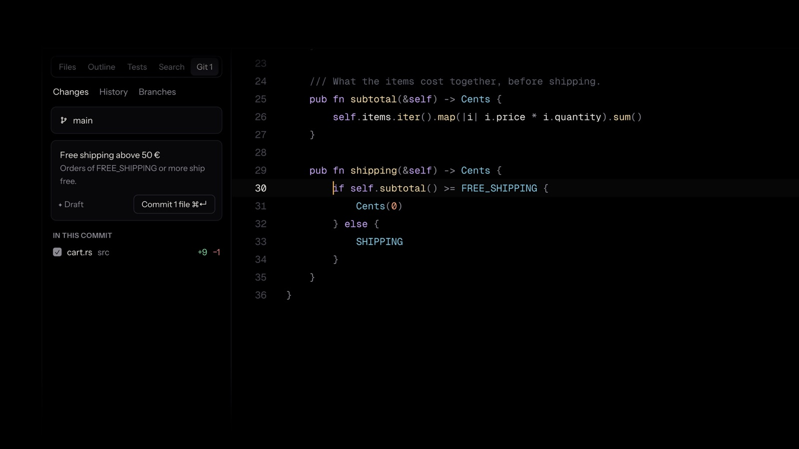
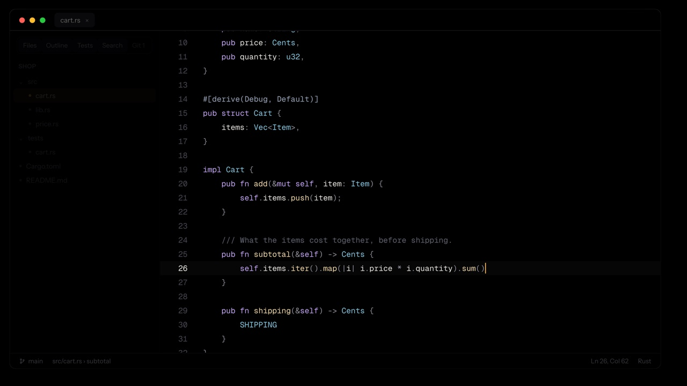
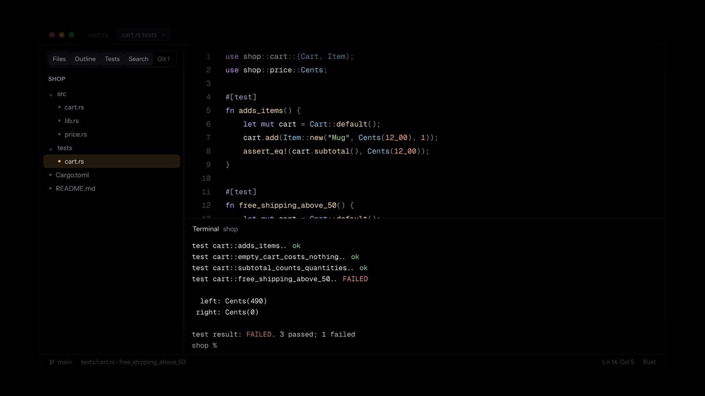
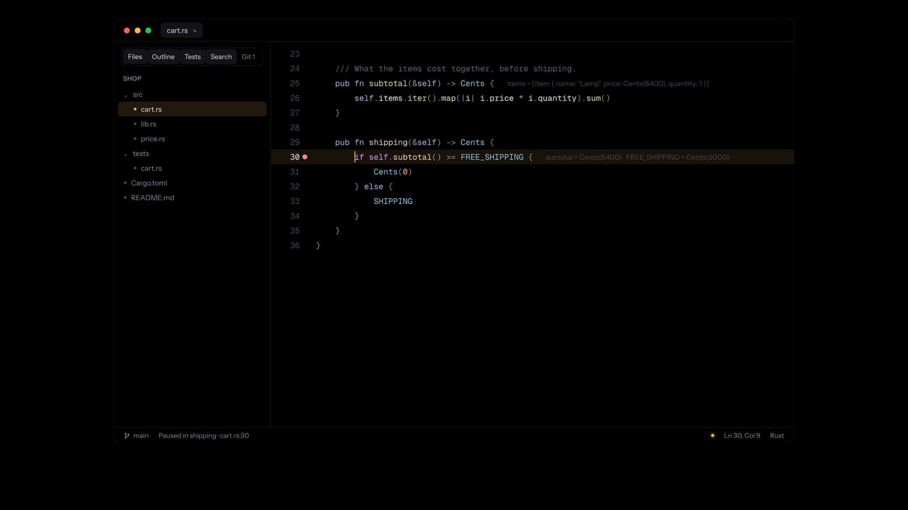
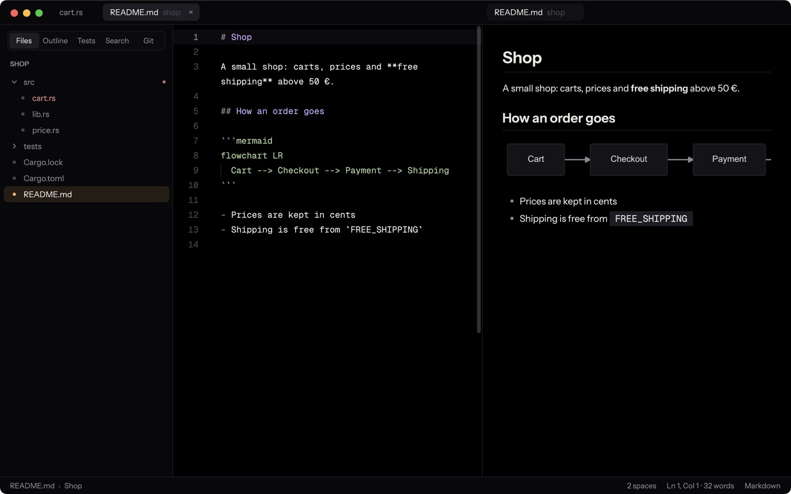
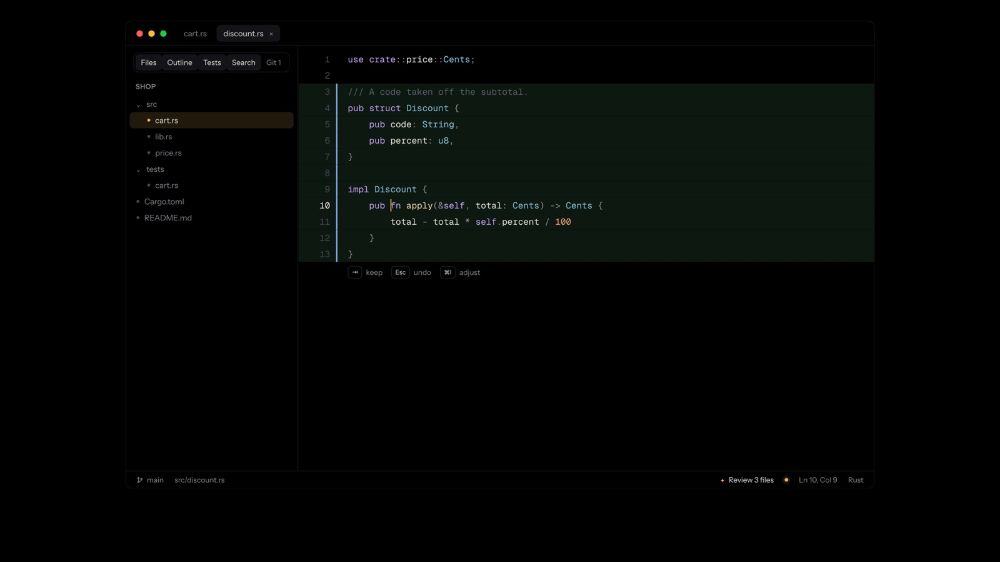
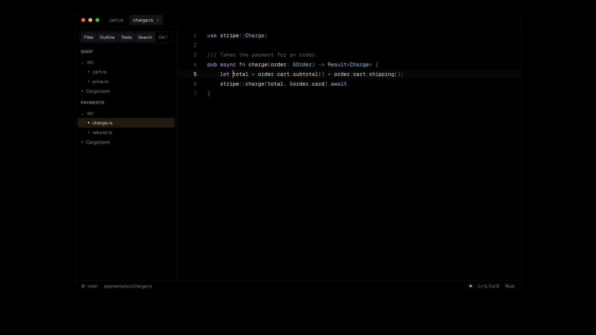
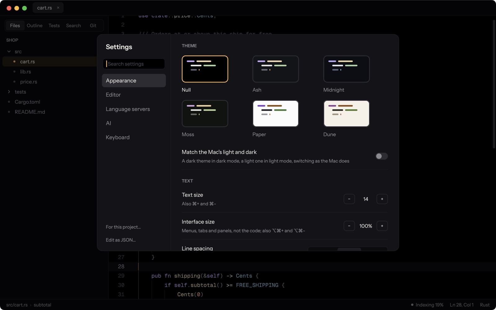
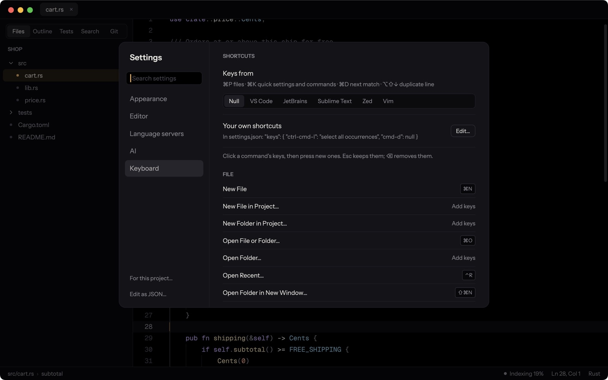
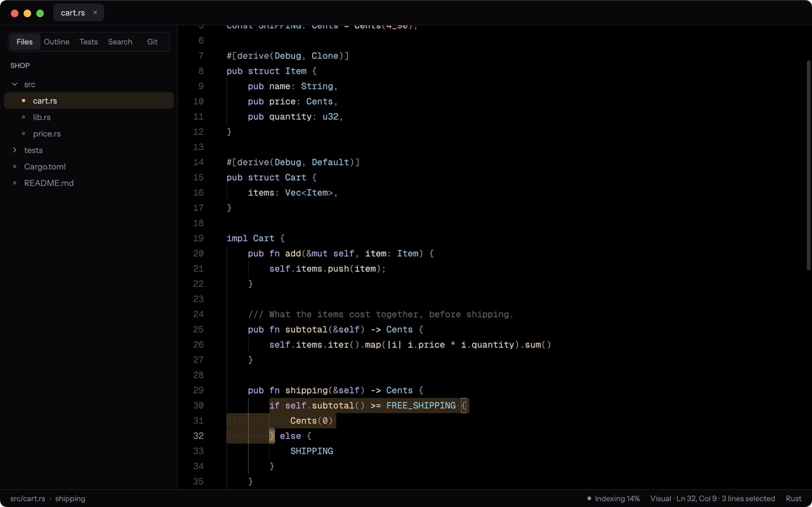

Git in one panel
Commit whole files or just the lines you mean. History with its graph, branches, conflicts resolved in place, pull requests.
Free to use · macOS, Windows and Linux
The screen belongs to your code. Everything an IDE should do is a keystroke away, and out of sight until then.
Fast
Native, drawn on the GPU. ⌘P lists a 42,000-file project in a quarter of a second; ⌘K changes any setting or runs any command.
AI on call
Describe a change in your own words: it's written into your code as a diff to keep or undo. Off until you turn it on.
Everywhere
The same quiet window on each, with six themes and the keys your hands already know.
Most editors fill the screen with everything at once: panels, badges, notifications, pop-ups. Null starts with nothing, and gives the screen back to your code.
One change, start to finish

Everything an IDE should do
Code intelligence for Rust, Python, TypeScript, Go, C, C++, Swift and more: the language server is found, or installed for you in one click.

Commit whole files or just the lines you mean. History with its graph, branches, conflicts resolved in place, pull requests.

Tests found and run from the code; errors in the terminal join the problems list.

Breakpoints, and values shown where they are, not in a pane.

Tables, formulas and diagrams, live beside the text.

Claude Code or Codex does the work; you review every change, file by file.

Each with its own files, git and language servers.

True black by default, with an amber caret; dark and light ones too. Bars that fade while you type.

VS Code, JetBrains, Sublime Text, Zed, or Vim.

Modes, motions, text objects, registers, macros.
Unsaved changes survive a crash, every save is kept for a month, and files changed on disk are never silently written over.
No telemetry, no accounts. Nothing leaves your computer unless you ask it to.
AI your way
Off until you turn it on. When it's on, it never changes your code without showing you the change.
Describe a change; it's written in as a diff to keep with ⇥ or undo with Esc.
Hand a task to Claude Code or Codex. Its changes come back as a list to review, change by change.
With AI off there's no button, no badge, no dot. Just your code.
The film
Download
The latest version, built from the source on GitHub by its public release workflow.
null to your terminals and "Open with Null" to folders.Download installer
or the .zip, to run from anywhere
Linuxx86-64 · X11 or WaylandUbuntu and Debian: sudo apt install ./null-linux-amd64.deb, and null works in every terminal.Download .deb
or the .tar.gz for other distributions (./install.sh)
Every version and its notes: releases · changelog · source · code signing policy · privacy
Public source
Null's code is on GitHub for anyone to read: report a problem, suggest what comes next, or send a contribution.